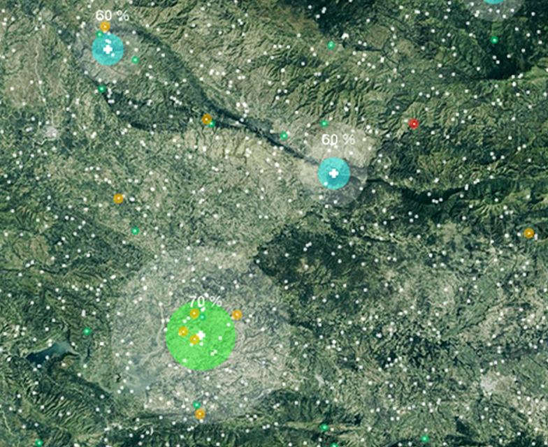

Michael de St. Aubin


Outbreak Response Simulator
An agent-based simulation model to test infectious disease outbreak response strategies and capacities. It is being developed as a thesis project for the MDes Risk & Resilience program at Harvard GSD.